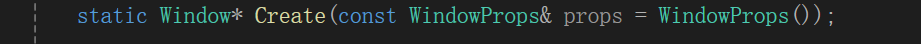

HazelEngine笔记6
Window Abstraction and GLFW
首先还是先了解一下glfw和glad这俩个东西。
GLFW
简介
GLFW（Graphics Library Framework）是一个用于创建窗口、处理输入和管理 OpenGL 上下文的开源库。它提供了一个简单而灵活的接口，用于开发图形应用程序，特别是在游戏和图形引擎开发中。
主要功能
- 窗口管理：GLFW 可以创建和管理窗口，包括设置窗口大小、标题、图标等属性。
- OpenGL 上下文管理：GLFW 允许创建 OpenGL 上下文，并提供必要的功能以与 OpenGL 进行交互。
- 输入处理：
- 支持键盘、鼠标和游戏控制器输入。
- 提供输入事件的回调机制，便于处理用户输入。
- 多平台支持：GLFW 支持 Windows、Linux 和 macOS，方便开发跨平台应用。
- 视频模式和显示模式管理：允许设置全屏模式、窗口模式和窗口位置等。
这也就是我们为什么依赖GLFW库去创建窗口，拉取操作，执行事件回调的原因了。
GLAD
GLAD（OpenGL Loader Generator）是一个 OpenGL 函数加载器，主要用于处理 OpenGL 的函数指针。由于 OpenGL 的函数在不同的平台和实现之间可能有所不同，GLAD 提供了一种机制，简化了加载和使用这些函数。
主要功能
- 函数加载：GLAD 自动生成加载所需的 OpenGL 函数指针，以便在运行时正确调用 OpenGL 函数。
- 多版本支持：支持多种 OpenGL 版本，开发者可以选择需要的 OpenGL 版本和扩展。
- 简化 API：通过简化 OpenGL 的函数调用，开发者可以专注于 OpenGL 编程，而不必担心底层的函数指针管理。
其实就是对底层openGL的逻辑进行了封装，将调用平台的函数指针都加载然后封装成方便的函数供外者调用。
然后大体讲述一下配置GLFW项目的过程和踩的坑吧。
首先是在git上拉取最新的glfw库到Hazel的vendor库中，然后修改premake5.lua文件
这个**”include”Hazel/vendor/GLFW””**是将GLFW的项目中的premake5.lua复制到此处,然后生成项目,这很关键.
上面就是创建一个目录(IncludeDir.GLFW就是对应的路径).
然后再Hazel项目链接GLFW生成的静态库
由于是项目生成,我们直接引号”项目名”就可以直接链接到对应的GLFW的静态库了.
踩坑
由于视频制作是几年前了,由于是从github上面拉取的子仓库,一直在更新,可是视频中的glfw的premake所包含的文件却没有及时更新.导致程序运行失败(函数没链接上其实直接复制函数到wiki百科上搜能搜到对应文件加上就好了,但当时奈何能力有限)
我直接附上最新的配置,感谢csdn的一位路人的博客指点.
project "GLFW"
kind "StaticLib"
language "C"
targetdir ("bin/" .. outputdir .. "/%{prj.name}")
objdir ("bin-int/" .. outputdir .. "/%{prj.name}")
files
{
"include/GLFW/glfw3.h",
"include/GLFW/glfw3native.h",
"src/glfw_config.h", --？？should it to be delete?
"src/internal.h", --
"src/platform.h", --
"src/mappings.h", --
"src/context.c",
"src/init.c",
"src/input.c",
"src/monitor.c",
"src/platform.c", --
"src/vulkan.c",
"src/window.c",
"src/egl_context.c", --
"src/osmesa_context.c", --
"src/null_platform.h", --
"src/null_joystick.h", --
"src/null_init.c", --
"src/null_monitor.c", --
"src/null_window.c", --
"src/null_joystick.c", --
}
filter "system:windows"
buildoptions { "-std=c11", "-lgdi32" }
systemversion "latest"
staticruntime "On"
files
{
"src/win32_init.c",
"src/win32_module.c", --
"src/win32_joystick.c",
"src/win32_monitor.c",
"src/win32_time.h", --
"src/win32_time.c",
"src/win32_thread.h", --解决Vulkan.obj相关问题
"src/win32_thread.c",
"src/win32_window.c",
"src/wgl_context.c",
"src/egl_context.c",
"src/osmesa_context.c"
}
defines
{
"_GLFW_WIN32",
"_CRT_SECURE_NO_WARNINGS"
}
filter { "system:windows", "configurations:Release" }
buildoptions "/MT"
然后直接在Hazel项目内调用GLFW的include的头文件就好了(头文件目录也早就包含在项目目录里了)
然后解决配置问题我们就要开始创建抽象的窗口类,之所以创建抽象的窗口类,是因为针对不同的平台我们有不同的窗口实现方法,虽然教程针对是windows窗口,后面有实现,但是抽象层依然是需要搭建的,以剥离各个平台的差异性.
来看看window.h抽象类有哪些
struct WindowProps
{
std::string Title;
unsigned int Width;
unsigned int Height;
WindowProps(const std::string& title = " Hazel Engine",
unsigned int width = 1280,
unsigned int height = 720)
:Title(title), Width(width), Height(height)
{
}
};
我们首先创建一个结构体来存放窗口的属性,例如窗口标题,窗口的大小等等.
然后我们开始编写抽象类window
class HAZEL_API Window
{
public:
using EventCallbackFn = std::function<void(Event&)>;
virtual ~Window() {}
virtual void OnUpdate() = 0;
virtual unsigned int GetWidth() const = 0;
virtual unsigned int GetHeight() const = 0;
//Window attributes
//窗口执行的回调函数设置，具体的逻辑会在windowswindow解释。
virtual void SetEventCallback(const EventCallbackFn& callback) = 0;
virtual void SetVSync(bool enabled) = 0;
virtual bool IsVSync()const = 0;
//创建窗口函数，默认的窗口参数就是上面的
static Window* Create(const WindowProps& props = WindowProps());
};
SetVSync这个函数用于设置窗口的垂直同步状态.
IsVSync用于检查垂直同步是否开始.
垂直同步主要是防止发生屏幕撕裂的问题,后面再说吧.
我们来看看Windowswindow怎么设计的吧.
//先看看头文件
namespace Hazel
{
class WindowsWindow : public Window
{
public:
WindowsWindow(const WindowProps& props);
virtual ~WindowsWindow();
void OnUpdate() override;
inline unsigned int GetWidth()const override { return m_Data.Width; }
inline unsigned int GetHeight()const override { return m_Data.Height; }
//windows attributes
inline void SetEventCallback(const EventCallbackFn& callback) override { m_Data.EventCallback = callback; }
void SetVSync(bool enabled)override ;
bool IsVSync()const override ;
private:
virtual void Init(const WindowProps& props);
virtual void Shutdown();
private:
GLFWwindow* m_Window;
struct WindowData
{
std::string Title;
unsigned int Width, Height;
bool VSync;
EventCallbackFn EventCallback;
};
WindowData m_Data;
};
}
我们可以看到一个windowswindow有一个窗口指针(其实是句柄封装的应该是)m_Window,其次就是窗口对应的基本属性m_Data.
在解释cpp实现文件之前,我们先解释SetEventCallback,前面事件系统略有提过,但是借此我们讨论清楚事件的传递过程.
回头再看事件系统的planning那一集终于看懂了,这个事件的传播系统.接下来我以窗口关闭操作为例,描述这个事件系统的传递逻辑.
首先,我们在windowswindow.cpp文件中
因为glfw监听玩家的操作,但是需要执行函数,于是我们传递了lambda函数
如何知道这些参数和lambda这么设计的,其实我们点进去函数定义
我们可以看到第一个参数时窗口句柄,就是我们创建的窗口指针,第二个我现在肯定看得懂,时glfw窗口关闭的回调函数(functional)
但是我们可以进一步点进去,我们发现原来是没有返回值,而且参数是GLFWwindow指针的函数指针类型(因为typedef)
我们来回顾一下函数指针的定义方式(一直用functional导致我函数指针有点忘了)
- 注意声明
void (*funcPtr)(int); // 指向返回类型为 void，参数类型为 int 的函数 int *funcPtr(int); //如果指针不加括号会认为是返回指针的函数
函数名作为指针： 在 C 和 C++ 中，函数名可以自动转换为指向函数的指针，因此在给函数指针赋值时可以省略
&：funcPtr = PrintSquare; // 可以直接赋值使用方法
funcPtr(5); // 调用指向的函数 (*funcPtr)(5); // 正确 *funcPtr(5); // 错误，会被误解为解引用
参数和返回值匹配
空指针检查
使用
typedef的注意当我们需要一种指针很多时我们就需要重命名这个指针类,这样之后创建这样的函数指针就很方便啦
typedef void (*FuncPtr)(int); FuncPtr f1, f2; // 明确表示 f1 和 f2 都是函数指针指向成员函数的指针
- 成员函数的指针： 如果要使用成员函数指针，需要额外注意语法，因为成员函数指针的类型是与类关联的：
typedef void (MyClass::*MemberFuncPtr)(int); // 成员函数指针类型 MyClass obj; MemberFuncPtr ptr = &MyClass::MyMethod; (obj.*ptr)(5); // 正确调用
- 函数指针数组
- 定义数组： 如果要创建函数指针数组，语法较为复杂，确保正确：
void (*funcArray[10])(int); // 定义一个包含 10 个指向函数的指针数组
这样我们就知道了传递什么样的lambda函数,去执行操作了.
接下来我们看lambda的操作
我们先看windowswindow的初始化
glfwGetWindowUserPointer 是 GLFW 库的一个函数，用于获取与指定窗口 window 关联的用户指针。此指针通常由 glfwSetWindowUserPointer 设置，用于在 GLFW 窗口和用户数据之间建立关联。
我们之所以将回调函数塞入windowData,就是为了将窗口指针和自定义存储数据建立联系,能在glfw的事件回调函数中建立和windows的关系,从而进一步传递事件.真的非常巧妙地这个m_Data设计的,这样我们就能创建事件进一步传递.
我们再往回看,我们就会发现我们首先获得windows的windowData对象,然后创建对应的窗口关闭事件.
利用m_Data绑定的Application的OnEvent将事件直接传递给应用层.
我们再看应用层是怎么处理的.

application类的包含的数据类型,我们看到了包含Window对象的智能指针 m_Window;
我们在创建应用层的时候就首先利用只能指针创建了一个windowswindow
然后绑定对应窗口的m_Data的回调函数,将事件传递个OnEvent
什么你说为什么创建的是WindowsWindow
你看父类的函数
是一个静态类函数,显然是要在外界定义的,由于目前只有windowswindow
我们就在全局实现了这个
所以这个类静态函数只能生成windowswindow
我们将事件传递个OnEvent,接着就是把这个操作从上往下传递,知道有有人捕获这个事件,最上层肯定是窗口关闭缩放之类的.我们为窗口关闭缩放设置一个事件调度分发对象(EventDispatcher),设置我们关闭窗口对应的事件类型,和关闭窗口操作的回调函数.
当传进去的event与我们关闭窗口对应事件匹配时,我们就会执行关闭窗口逻辑,同时直接标记Event使其无法进一步向下传播,如何标记上一个文本已经解释了.
所以整个事件的传播流程就是这样.
我直接附上cpp文件
#include "hzpch.h"
#include "WindowsWindow.h"
#include "Hazel/Events/KeyEvent.h"
#include "Hazel/Events/MouseEvent.h"
#include "Hazel/Events/ApplicationEvent.h"
namespace Hazel
{
static bool s_GLFWInitialized = false;
static void GLFWErrorCallBack(int error, const char* description)
{
HZ_CORE_ERROR("GLFW Error ({0}): {1}", error, description);
}
Window* Window::Create(const WindowProps& props)
{
return new WindowsWindow(props);
}
WindowsWindow::WindowsWindow(const WindowProps& props)
{
Init(props);
}
WindowsWindow::~WindowsWindow()
{
Shutdown();
}
void WindowsWindow::Init(const WindowProps& props)
{
m_Data.Title = props.Title;
m_Data.Width = props.Width;
m_Data.Height = props.Height;
HZ_CORE_INFO("Creating window {0} ({1},{2})", props.Title, props.Width, props.Height);
if (!s_GLFWInitialized)
{
//TODO: glfwTerminate on system shutdown
int success = glfwInit();
HZ_CORE_ASSERT(success, "Could not intialized GLFW!");
glfwSetErrorCallback(GLFWErrorCallBack);
s_GLFWInitialized = true;
}
m_Window = glfwCreateWindow((int)props.Width, (int)props.Height, m_Data.Title.c_str(), nullptr, nullptr);
glfwMakeContextCurrent(m_Window);
glfwSetWindowUserPointer(m_Window, &m_Data);
SetVSync(true);
//Set GLFW callbacks
glfwSetWindowSizeCallback(m_Window, [](GLFWwindow* window, int width, int height)
{
WindowData& data=*(WindowData*)glfwGetWindowUserPointer(window);
data.Width = width;
data.Height = height;
WindowResizeEvent event(width, height);
data.EventCallback(event);
});
glfwSetWindowCloseCallback(m_Window, [](GLFWwindow* window)
{
WindowData& data = *(WindowData*)glfwGetWindowUserPointer(window);
WindowCloseEvent event;
data.EventCallback(event);
});
glfwSetKeyCallback(m_Window, [](GLFWwindow* window,int key,int scancode,int action,int mods)
{
WindowData& data = *(WindowData*)glfwGetWindowUserPointer(window);
switch (action)
{
case GLFW_PRESS:
{
KeyPressedEvent event(key, 0);
data.EventCallback(event);
break;
}
case GLFW_RELEASE:
{
KeyReleaseEvent event(key);
data.EventCallback(event);
break;
}
case GLFW_REPEAT:
{
KeyPressedEvent event(key, 1);
data.EventCallback(event);
break;
}
default:
break;
}
});
glfwSetMouseButtonCallback(m_Window, [](GLFWwindow* window, int button, int action,int mods)
{
WindowData& data = *(WindowData*)glfwGetWindowUserPointer(window);
switch (action)
{
case GLFW_PRESS:
{
MouseButtonPressedEvent event(button);
data.EventCallback(event);
break;
}
case GLFW_RELEASE:
{
MouseButtonReleasedEvent event(button);
data.EventCallback(event);
break;
}
default:
break;
}
});
glfwSetScrollCallback(m_Window, [](GLFWwindow* window, double xOffset, double yOffset)
{
WindowData& data =*(WindowData*)glfwGetWindowUserPointer(window);
MouseScrolledEvent event((float)xOffset, (float)yOffset);
data.EventCallback(event);
});
glfwSetCursorPosCallback(m_Window, [](GLFWwindow* window, double xPos, double yPos)
{
WindowData& data = *(WindowData*)glfwGetWindowUserPointer(window);
MouseMovedEvent event((float)xPos, (float)yPos);
data.EventCallback(event);
});
}
void WindowsWindow::Shutdown()
{
glfwDestroyWindow(m_Window);
}
void WindowsWindow::OnUpdate()
{
glfwPollEvents();
glfwSwapBuffers(m_Window);
}
void WindowsWindow::SetVSync(bool enabled)
{
if (enabled)
glfwSwapInterval(1);
else
glfwSwapInterval(0);
}
bool WindowsWindow::IsVSync()const
{
return m_Data.VSync;
}
}
**
glfwSwapInterval(1)**：- 这是
GLFW库中的一个函数，设置交换间隔（swap interval）。 - 参数
1表示启用 V-Sync，让帧率与显示器的刷新率同步，以防止屏幕撕裂。每次屏幕刷新时才允许 GPU 渲染新的帧。 - 如果显示器的刷新率是 60Hz，V-Sync 将帧率限制在 60FPS，使两者保持一致。
**
glfwSwapInterval(0)**：- 当
glfwSwapInterval(0)被调用时，禁用了 V-Sync，不会对帧率进行限制。 - 这允许应用程序尽可能快地渲染新帧，但可能会导致屏幕撕裂现象（因为帧的刷新不再与显示器的刷新率同步）。
- 这是